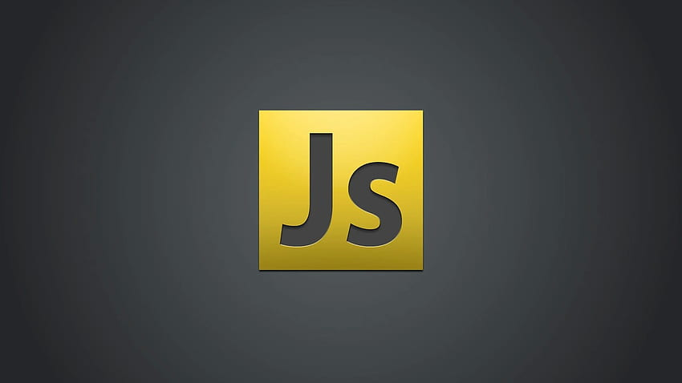

Javascript
Pelajari JavaScript untuk membuat website yang interaktif dan dinamis. Di course ini, kamu akan memahami dasar pemrograman web seperti variabel, fungsi, event, dan manipulasi elemen HTML agar halaman lebih hidup dan responsif.
Daftar Materi
-
01Pengenalan JavaScript & Lingkungan20 min
-
02Persiapan & Lingkungan Pengembangan25 min
-
03Dasar-Dasar JavaScript30 min
-
04Kontrol Alur Program35 min
-
05Function & Scope25 min
-
06Array & Object Modern (ES6+)40 min
-
07DOM Manipulation & Events35 min
-
08Async JavaScript & API30 min
-
09Error Handling & Storage25 min
-
10Best Practices & Proyek Nyata20 min
Detail Materi
Durasi
2.5 Jam
Total Materi
12 Modul
Tipe
Front-End
Tentang Materi
Course JavaScript ini dirancang untuk membantumu menguasai logika pemrograman di sisi front-end. Kamu akan belajar mulai dari konsep dasar, DOM manipulation, hingga penggunaan API dan interaksi real-time di web.
Cocok untuk pemula yang ingin naik level dari sekadar membuat tampilan, menjadi developer yang mampu menambahkan interaktivitas dan fungsionalitas pada website.
Apa yang akan kamu kuasai?
- Memahami dasar-dasar JavaScript dan cara kerjanya di browser maupun lingkungan modern.
- Menguasai variabel, tipe data, operator, fungsi, array, dan object untuk membangun logika program.
- Mengontrol alur program menggunakan kondisi, perulangan, dan fungsi bersarang.
- Berinteraksi dengan elemen web melalui DOM dan event handling untuk membuat halaman interaktif.
- Menerapkan konsep asynchronous seperti callback, promise, dan async/await untuk pengambilan data.
- Mempelajari OOP, modular JavaScript, dan fitur modern ES6+ untuk penulisan kode yang efisien.
- Menggunakan API, local storage, serta teknik debugging untuk mengembangkan aplikasi web dinamis.
- Membangun project JavaScript nyata dengan penerapan praktik terbaik dan struktur kode yang rapi.